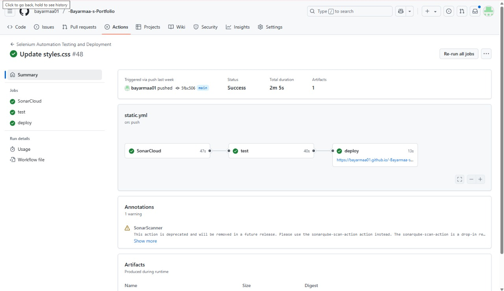
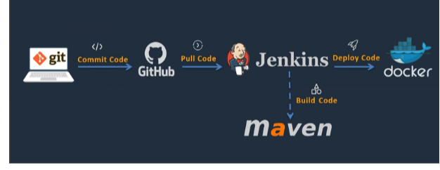
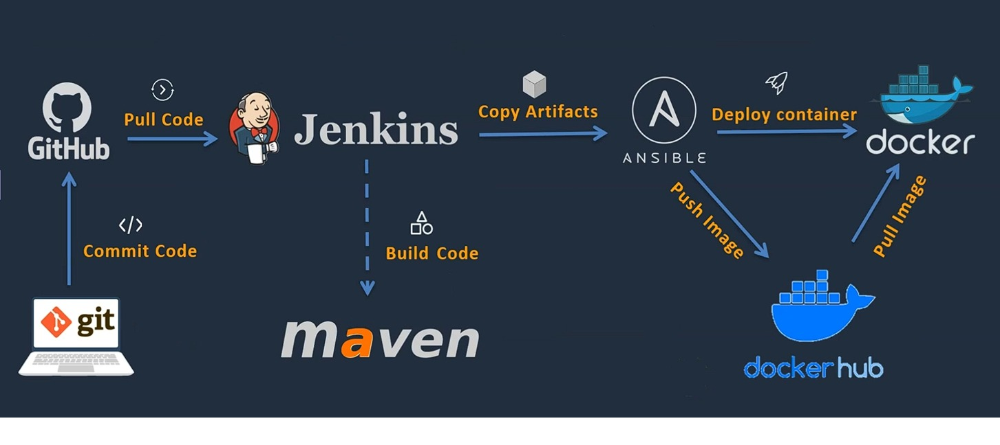
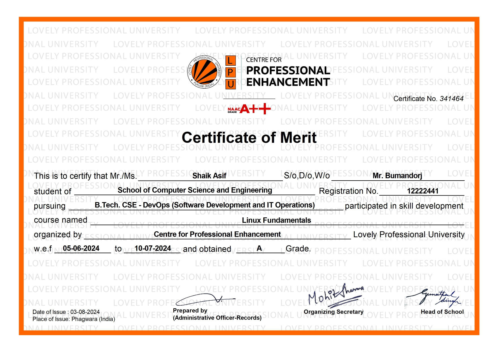
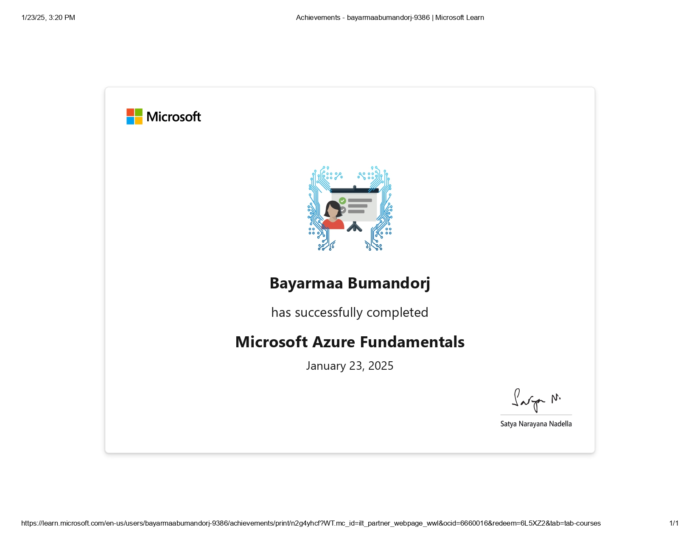
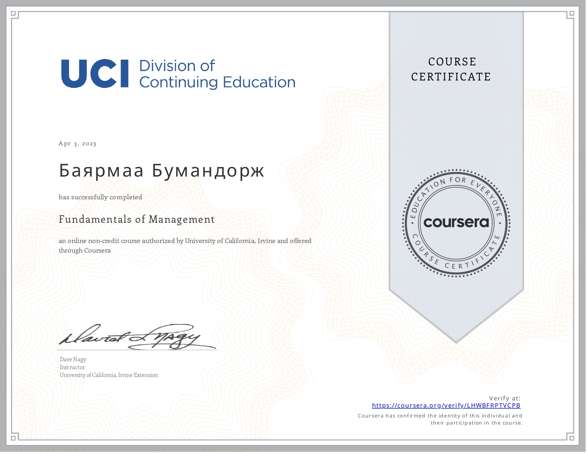
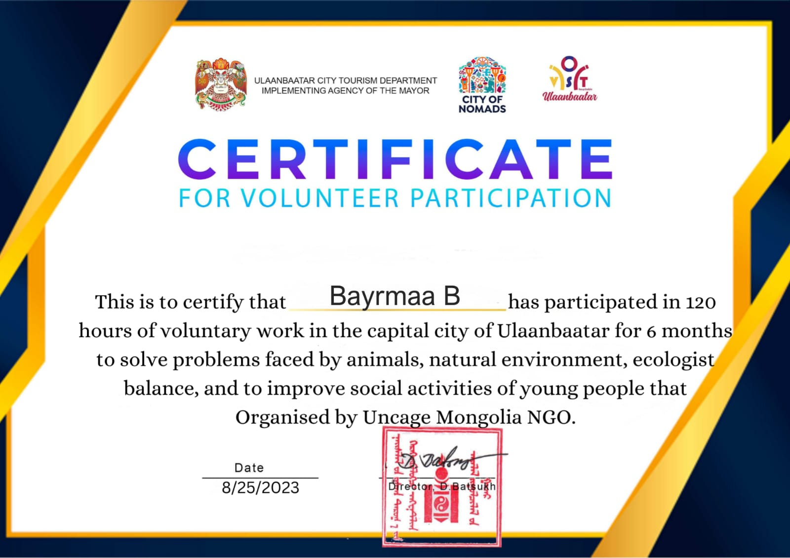

I'm a Bachelor's student in DevOps Engineering at Lovely Professional University with a passion for automation, CI/CD pipelines, and creating impactful digital solutions. I’m driven by a mission to blend technology with purpose — especially through volunteering, community impact, and collaboration.
I've built CI/CD pipelines using GitHub Actions, Docker, and Kubernetes, and contributed to projects that address real-world problems. Outside tech, I’ve spent 120+ hours volunteering with UNCAGE NGO to help protect the environment and animals.

Built a CI/CD pipeline using GitHub Actions, Docker, and Kubernetes for a scalable cloud app. Improved deployment speed by 60% and ensured automated testing and rollback safety.
🔗 View Live Project
Successfully implemented a complete DevOps pipeline integrating Jenkins for continuous integration and Docker for containerized deployment. The pipeline automatically builds, tests, and deploys updates to a live environment.
Technologies: Jenkins, GitHub, Docker, Shell Scripting
🔗 GitHub Repository
Interview Answer – Skill Improvement:
Recently, I improved my automation and DevOps skills while working on my capstone project. The project involved building a containerized CI/CD pipeline to streamline software deployment in a cloud environment.
I enhanced my expertise in tools like Jenkins, Docker, and Ansible, and deployed our solution on AWS EC2 instances. I learned how to automate code integration, testing, and containerized deployment in a cloud-based pipeline.
Additionally, I gained hands-on experience in troubleshooting pipeline failures, configuring cloud infrastructure, and optimizing workflows for better performance and scalability.
By applying these skills, I successfully automated the deployment process, reduced manual effort, and improved software delivery speed. This experience also deepened my real-world understanding of CI/CD and cloud DevOps.
Tools Used: Jenkins, Docker, Ansible, GitHub, AWS EC2

Linux Fundamentals – Lovely Professional University

Azure Fundamentals – Microsoft

Fundamentals of Management – Coursera

120-Hour Volunteering – UNCAGE NGO
+91-7658055233